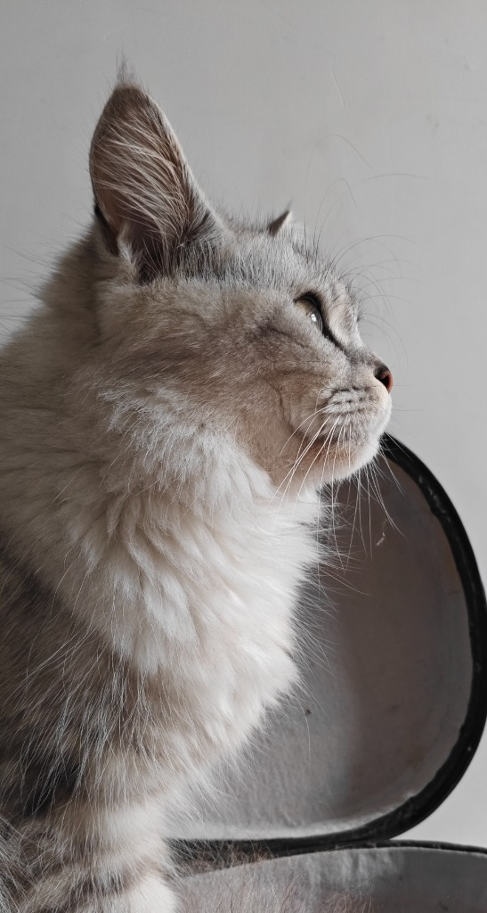

COMPANY · ORIGIN & JOURNEY
缘起与开发轨迹
一个工具党独立开发者的十次重构，与「枝络（Twiggo）」的诞生。
我是 Uno5&，一个普通的独立开发者。Neinote 始于我对各类工具的爱恨交织。我是堪称典型的工具党，热衷于寻找和尝试不同的效率工具。然而在日复一日的工作与记录中，每面对一款工具，我总不免吐槽：“为什么没有 XX 功能？为什么不能更进一步？为什么流程不能再轻简一些？”当积攒的别扭与不满终于爆发，我决定不再等待，自己做一款顺手的工具！
虽然关于它的构想早在心中盘旋已久，但直到 2025 年 5 月，我才用 bolt.new 搭出了第一个原型。老实说，除了同样拥有一个 Markdown 编辑器外，那个粗糙的原型与今天的 Neinote 已大相径庭。但一切，就这么开始了。
你可以在 Neinote 身上看到许多杰出先行者的影子，从 Boogunote、Notion、Roam Research、Obsidian，到 Sayit、WDTP 与 TreeSheets——它们都曾深刻启发过我。Neinote 完全生长于我最真实的输入与整理体验。
我只有少量 Java、C++、MATLAB 代码经验，前端于我是一片全然陌生的领域。依托生成式 AI 的协同，我先后尝试过 Flutter、React / Vue 纯前端以及 Tauri 的组合，前后历经至少 10 次大重构、7 个大版本、十几个分支与上百次迭代。直到第 7 次大重构，才最终确立下现在的形态：React + Go + Wails v3 的底层组合，搭配「自动隐藏悬浮 + 主页面双窗口」的交互范式。
今天回看，这似乎是个无比自然的设计，但通往“合理”的道路从来不是一马平川。我不知道 Neinote 离最完美、最舒服的终极形态还有多远，但至少在当下，我们相处得十分融洽。它所给予我的便利，已经是我能为自己创造的最大价值。
TWIGGO · CORE
枝络（Twiggo）
在此，请允许我隆重介绍 Neinote 的核心——枝络（Twiggo）。如果将 Org-mode 在桌面端与 Markdown 结合，会发生什么？枝络是像影子一样的悬浮抽屉，也是像大树一样的大纲笔记。它可以容纳一切零散的思维碎片——轻巧、敏捷，存在感低却足够方便，无需切换窗口，鼠标轻滑即出，移出即隐。这就是枝络，让你所有的思绪随着一根根枝桠发散，随着一个个节点积累。

WITH GRATITUDE · COMPANIONS
致敬爱的，挚爱的，亲爱的
由衷地感谢我的奶奶，世界最伟大的女人！感谢一直陪伴我的猫咪 Doremi。最后，我想感谢我自己！